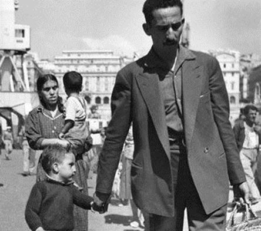
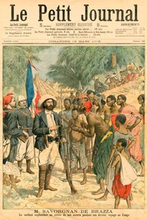
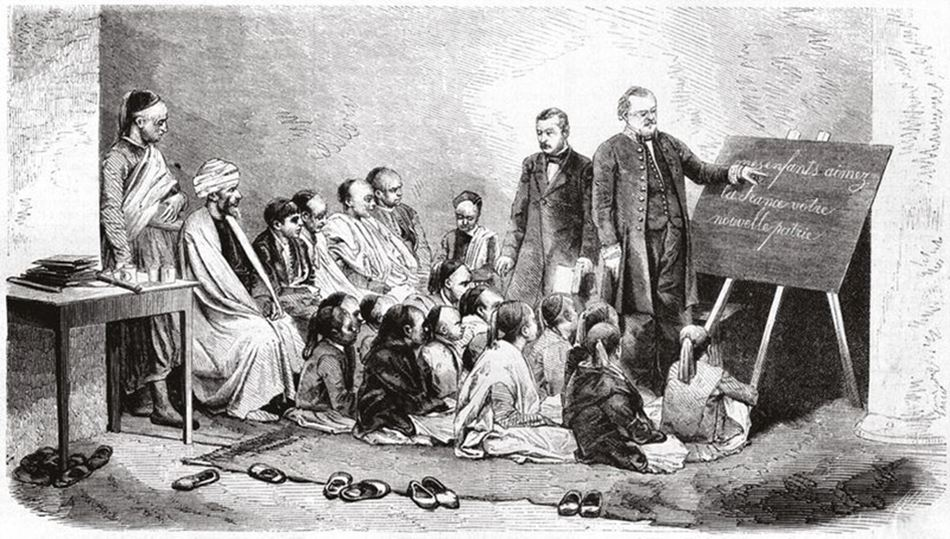
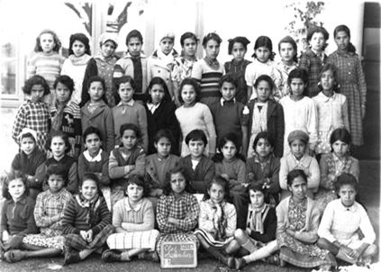
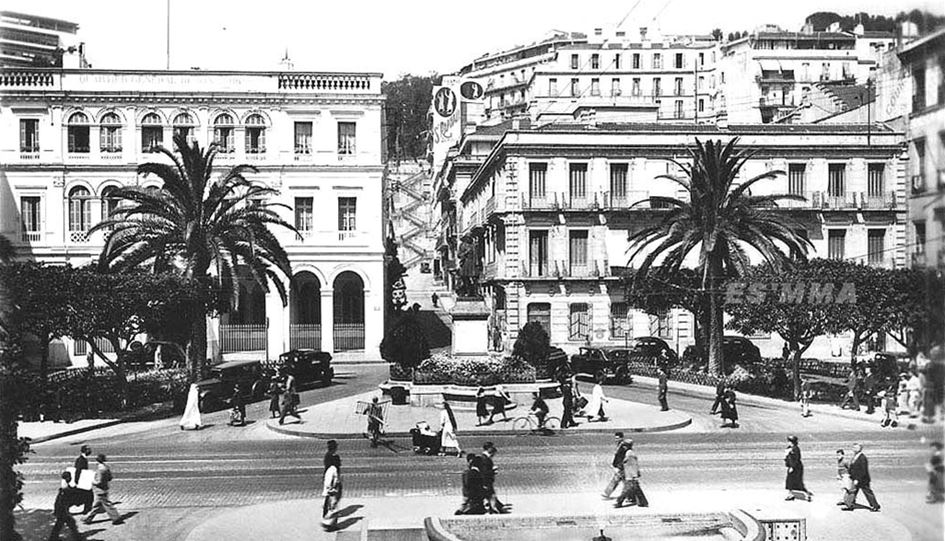

Le dérapage de M. Macron en Algérie n’est pas une anecdote. C’est un fait puissamment révélateur, un fait d’une haute portée symbolique, dans un domaine, la politique, où les symboles sont souvent plus importants que les faits eux-mêmes. Ce pur produit de l’ère du vide et de la civilisation du spectacle, cet énarque sûr de lui, a trouvé naturel d’aller en Algérie parler de la colonisation comme d’un crime contre l’humanité, une barbarie. Apparemment, c’est stupide.
En fait, cela traduit un cynisme et un mépris que l’image dessinée par les médias tente en vain de travestir. M. Macron inscrit ce qui lui tient lieu de pensée dans les stéréotypes de la gauche : il y a des dictatures fréquentables, comme Cuba ou l’Algérie. On peut sans vergogne y salir l’image de la France, en pensant aux très chers immigrés qui vont voter demain, et beaucoup moins aux Pieds-Noirs ou aux Harkis, que l’Histoire a balayés. Ils ont été bien gentils les rapatriés qui sont venus lui parler. Sa réponse, curieux mélange de de Gaulle (je vous ai compris) et de fausse sentimentalité à l’américaine (je vous aime) qui ne pouvait que raviver les blessures
mémorielles des rapatriés ne soulève qu’une question : est-il un salaud d’arriviste cynique ou un pantin débitant des phrases stéréotypées dont il ne maîtrise pas la signification ?
Il paraît qu’une moitié des Français est pourtant d’accord avec les propos honteux de ce personnage. En fait, cela n’a rien d’étonnant puisque les médias, après l’Education dite « nationale », décérèbrent les Français en permanence. La « droite », celle de Chirac, notamment, n’a pas été la dernière à abandonner le terrain à l’adversaire, quand elle ne s’en faisait pas la complice. En 2004-2005, j’ai vécu cette désertion idéologique, et sur le même sujet. Lors de l’élaboration de la « Loi portant reconnaissance de la Nation et contribution nationale en faveur des Français rapatriés », j’avais introduit un amendement qui fut approuvé à quatre reprises par les parlementaires, deux fois par les députés, une fois par les sénateurs, et à nouveau par les députés en repoussant une motion socialiste. Le texte en était équilibré : les programmes de recherche universitaire accordent à l’histoire de la présence de la France outre-mer, notamment en Afrique du Nord, la place qu’elle mérite. Les programmes scolaires reconnaissent en particulier le rôle positif de la présence française outre-mer, notamment en Afrique du Nord, et accordent à l’histoire et aux sacrifices des combattants de l’armée française issus de ces territoires la place éminente à laquelle ils ont droit. » Il s’agissait pour moi d’apprendre aux jeunes Français qu’ils pouvaient être fiers de ce qui avait été réalisé dans les colonies et de ce qui aujourd’hui encore se fait dans la France d’Outre-Mer. La comparaison entre Haïti qui s’est « libérée » et les Antilles françaises est éclairante. Le rappel du rôle des combattants, pieds-noirs ou musulmans, avait pour but de réunir les jeunes, métropolitains, immigrés, rapatriés ou harkis, dans une même célébration de la mémoire. La gauche, tardivement réveillé, sans doute par l’Ambassade d’Algérie, a attaqué ce texte. Des historiens ont affirmé que le Parlement ne devait pas interférer avec leur travail et l’enseignement qui en découle. Chirac a fait en sorte que le Conseil Constitutionnel annule ce texte. Peu importent les arguties utilisées, la Loi Taubira qui impose l’enseignement de l’esclavage restreint à la traite négrière atlantique est, elle, toujours en vigueur. L’Histoire peut être contrôlée par les parlementaires lorsqu’ils lui imposent, à gauche, de médire de la France.
Il est pourtant facile de défendre la colonisation française. Elle n’a pas exterminé de populations. Elle ne les a pas remplacées. Elle ne les a même pas forcées à abandonner leurs croyances. Ce ne sont pas les Français qui ont colonisé l’Amérique ou l’Australie. Les Espagnols ont converti ou massacré. Les Anglo-saxons ont remplacé ou exploité. Comme l’a montré Jacques Marseille, la colonisation française a globalement été une mauvaise affaire. Si on met à part l’exploitation sucrière sous l’Ancien Régime, évidemment liée à l’esclavage, la seconde colonisation, au XIXe siècle, celle qui est en cause pour l’Algérie, pour l’Afrique en général, pour Madagascar et pour l’Indochine, a engendré plus de dépenses que de profit. Elle a permis à la France de conserver une place enviable dans le monde, et elle a joué grâce à l’Empire un rôle déterminant après le désastre de 1940 et pour la Libération. Mais elle a freiné le développement de la Métropole et sa modernisation.
Les industries déclinantes se sont maintenues grâce aux débouchés coloniaux alors que la concurrence internationale hors Empire a favorisé la productivité et l’innovation. L’abandon de l’Empire dans les années 1960 a d’ailleurs correspondu à un rebond de notre compétitivité et de notre économie. Au-delà des investissements directs, les crédits offerts par la France à ses colonies pour financer leur déficit structurel a représenté entre 1900 et 1970 trois fois le total des aides américaines entre 1945 et 1955, et quatre fois les emprunts russes. Le but n’était pas économique. Il s’agissait de faire rayonner la civilisation française. Cette finalité « ethnocentrique », selon le terme de Levi-Strauss a été revendiquée surtout à gauche de Ferry à Blum. La droite était réservée voire hostile.
Non seulement, cette seconde colonisation n’a aucun lien avec l’esclavage, mais elle l’a même combattu. La conquête d’Alger, c’est avant tout la fin d’une cité, une colonie turque, soit-dit en passant, qui avait durant des siècles piraté la Méditerranée occidentale, et pratiqué l’esclavage des Européens chrétiens capturés sur les navires attaqués. Ils ont représenté jusqu’à 30 % de la population de la ville.
De même, c’est Pierre Savorgnan de Brazza, un Italien naturalisé Français qui a contribué, non sans difficultés, à éradiquer l’esclavage des régions placées sous protection française dans ce qui allait devenir l’Afrique Equatoriale Française. La capitale du Congo ex-français, qui fut celle de la France Libre où de Gaulle prononça un discours capital sur l’avenir des colonies, s’appelle toujours Brazzaville, juste hommage au « colonisateur » qui disait : « soutenir l’honneur d’un pavillon qui arrache leur proie aux négriers n’est pas chose facile. »
L’action médicale de la France a été primordiale. Curieux criminel contre l’humanité que celui qui laisse plus d’habitants à son départ qu’il n’y en avait à son arrivée ! C’est une épopée que l’action des médecins français dans les colonies !
Cette œuvre a été souvent inséparable de l’Institut Pasteur, l’une de ces créations dont notre pays a tout lieu d’être fier.
Ainsi Alexandre Yersin, dont la mémoire est encore honorée au Vietnam communiste a isolé le bacille de la peste. Il a développé un vaccin et un sérum dont il a ensuite démontré l’efficacité. Lyautey disait : « si quelque chose ennoblit et justifie l’expansion coloniale, c’est l’action du médecin considérée comme une mission ou un apostolat ». En Algérie, c’est Alphonse Laveran qui isole l’agent du paludisme à Constantine et en reçoit le Prix Nobel. Par ailleurs, les zones marécageuses, comme la Mitidja, propices à ces infections sont assainies. A Madagascar, c’est André Thiroux qui lutte contre la peste, la rage et la variole. En 1917, Madagascar est le premier pays où la variole est éradiquée. Au moment des indépendances, la France laisse plus de 4000 formations sanitaires, 2500 dispensaires, 600 maternités, 216 hôpitaux, 15 instituts Pasteur. Les épidémies, les endémies dont les colonies souffraient ont reculé ou disparu. L’espérance de vie s’est accrue.
De même l’œuvre éducative a été remarquable. Je conseille à l’énarque suffisant de lire un livre publié chez Privat par l’Amicale des anciens instituteurs et instructeurs d’Algérie : « 1830-1962 Des enseignants d’Algérie se souviennent »…
C’est l’histoire de l’œuvre scolaire pendant la présence française écrite par ceux qui l’ont achevée et qui avaient toutes les raisons d’en être fiers. Les difficultés initiales y sont rappelées, notamment l’hostilité du sectarisme religieux des musulmans qui s’opposait à la scolarisation des enfants. Il en va tout autrement des juifs, qui devront eux-aussi quitter l’Algérie en 1962 alors que certaines familles y étaient avant même la conquête arabe. Jusqu’en 1880, pour ne pas heurter la foi musulmane, on privilégie les écoles arabes-françaises afin que sous la tutelle de deux instituteurs, l’enfant puisse acquérir les savoirs de base tout en recevant une éducation coranique.
Si, jusqu’en 1880, l’obstacle majeur auquel se heurte la diffusion de l’instruction en milieu indigène est l’attachement à la langue et à la religion, après une difficulté nouvelle apparaît : la prodigieuse expansion démographique. De 3 millions en 1830 à 12 millions en 1962. Un effort considérable va donc être prodigué. En 1900, il y avait 90 000 européens scolarisés, cette fois « à la française », dont la moitié de filles, et seulement 24 000 musulmans dont 6 % de filles. En 1961, les chiffres sont de 109 300 pour les Européens et de 735 000 pour les musulmans mais avec 37% de filles. Comportement barbare que celui qui a conduit à une augmentation de la population, à une scolarisation plus grande et quasi égalitaire des musulmans, et à l’émancipation des filles ? On mesure ici le caractère intellectuellement stupide et moralement honteux des propos de M. Macron !
Enfin, il reste à évoquer les infrastructures qui font des anciens départements français d’Algérie une des zones les plus développées de l’Afrique. Ainsi, entre 1857 et 1945, plus de 5000 km de voies ferrées sont implantés. Après la seconde guerre mondiale, les trains qui y roulent sont souvent mieux équipés que dans bien des régions métropolitaines.
De même, à l’indépendance, le réseau routier comprend 8500 km de routes nationales bien entretenues, 12 700 km de départementales et autant de pistes carrossables, près de 20 000 km de chemins ruraux. Il existe alors 33 aérodromes, dont 3 nationaux. De nombreux ports ont été aménagés pour accueillir de grands navires, Alger, Bougie, Bône etc… Les ressources du pays, hydrauliques, énergétiques sont en plein développement. L’agriculture est alors exportatrice pour le blé, le vin, les agrumes. L’industrie a pris son essor, grâce notamment au Plan de Constantine à partir de 1958. Le départ des Pieds-Noirs a précipité l’Algérie dans la crise, mais a laissé à ce pays des villes modernes, dotées de logements et d’équipements scolaires et sanitaires à l’européenne. Parler de crime à propos de la colonisation est évidemment idiot tant ce processus fait partie de l’histoire humaine dont il est même un mécanisme essentiel. On peut en revanche considérer que la manière dont la décolonisation s’est produite a souvent été coupable. Alors qu’on impose aujourd’hui aux Français une immigration en provenance des anciennes colonies, dans bien des cas, le rejet des populations européennes s’est produit dans celles-ci avec des conséquences néfastes pour elles. Outre l’Algérie, l’exemple actuel le plus frappant est donné par une ancienne colonie britannique, la Rhodésie du Sud, devenue le Zimbabwe, un pays que ses fermiers blancs faisaient prospérer et qui a été ruiné par un dictateur inamovible à 93 ans, Robert Mugabé, dont la politique suicidaire a consisté à les chasser de leurs terres. M. Macron devrait aller lui parler des crimes contre l’humanité. C’est un expert.
Partager cette page